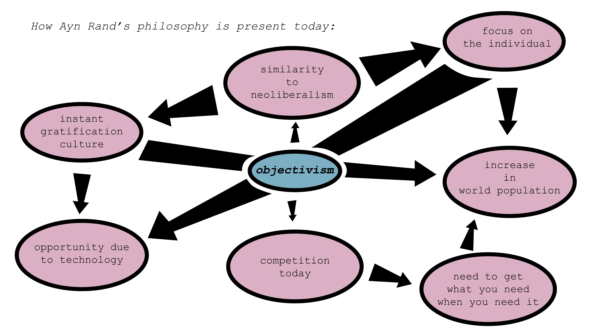
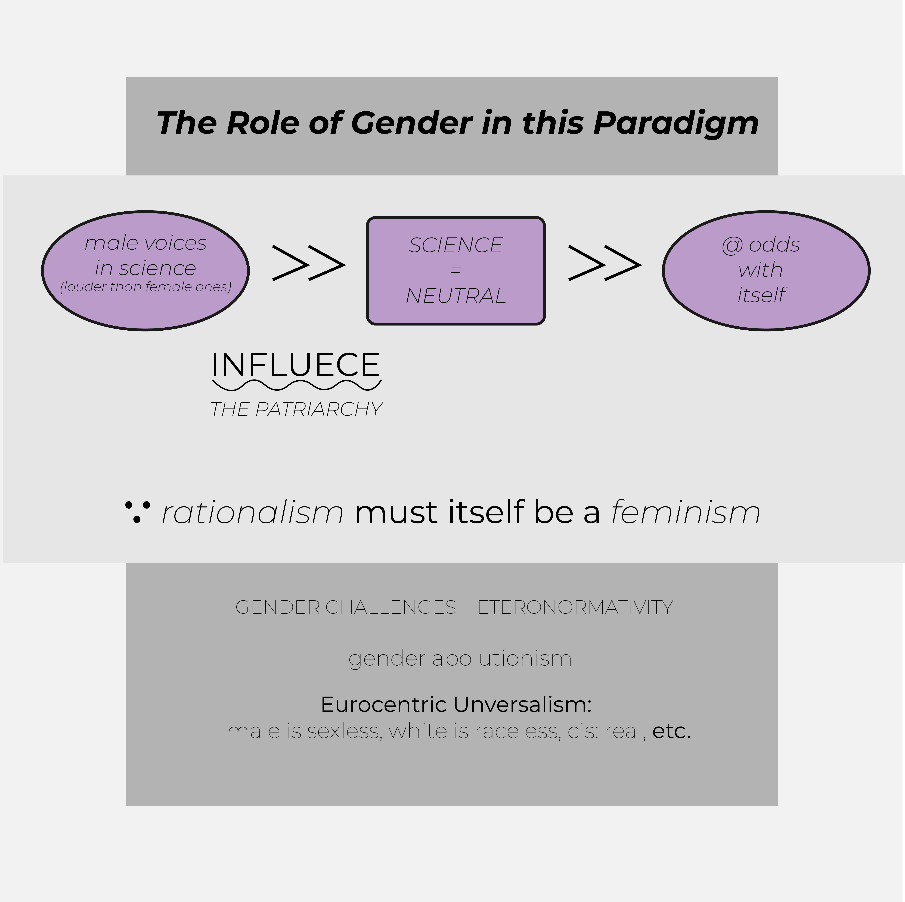
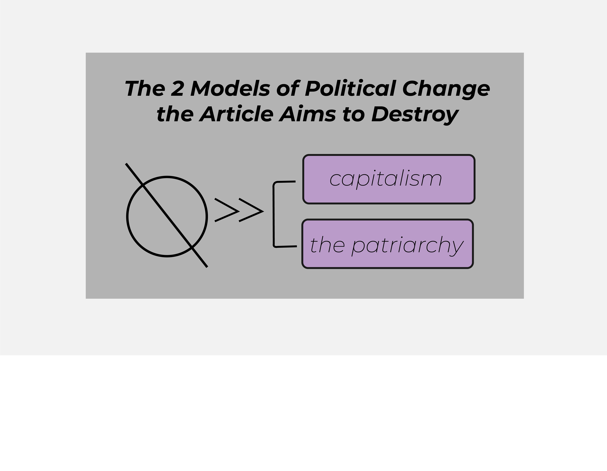
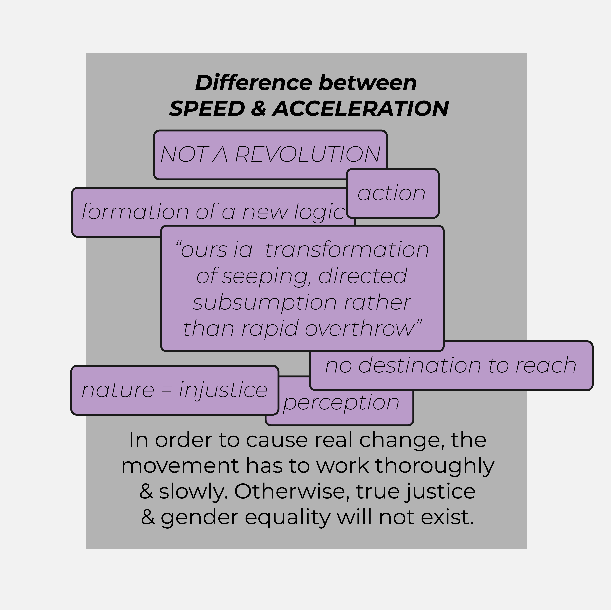

The Ursula Le Guin reading was an interesting science fiction allegory
for issues that we see in real life. I know in class we talked about
the ways that the new planet represents our planet Earth after the
introduction and growth of the Internet - the way it is an undercurrent
to our reality or our natural lives. However, I recognized the new
planet as an allegory for the rural areas that have the Internet and
Western technologies introduced. The way the planet reacted poorly, or
the inhabitants felt afraid of the colonists. Also, Osden represented a
translator figure between the colonists and the inhabitants. It is
interesting that he was the first of the characters to fully understand
the thoughts of the inhabitants, more interesting that the colonists
adopted the inhabitants’ fear and that they acted in an empathetic
fashion. This event is most likely the reason why the colonists left,
and how this version of colonialism does not look like ours.
This way of analyzing the short story, or the events in the short story
also relates to our version of technological colonialism. I will never
forget when I was informed that even tribal lands in Africa had access
to 3G cell service at a Model United Nations conference in Vancouver,
BC. Access to technology in rural areas of the world, or places that
would be deemed “off the grid” creates opportunity but also indicates
how prominent and inconsiderate Western tradition is abroad.

Here are a few images from home and from times with my friends
that relate to the reading. They are posterized, such that I
made them poor quality images. This does not confront the part
of the article that addresses poor image and its relation to video,
but, by posterizing these images, I created my response to the reading.
The definition of cybernetics, as addressed in the video, is not the
way that I picture it. In the video, they related it to ecosystems and
the natural world, relaying that the world was built on feedback loops
and that every person was just a part of a bigger system. In my mind,
I visualize cybernetics like wires connecting technology and society
digitally. I think about the service networks in Newark, New Jersey
that fuel Wall Street’s stock market. When I think about cybernetics
like an ecosystem, however, I feel a responsibility to keep the natural
world in my peripheral vision. It feels like something that should not
be forgotten in day to day actions.
As for the way that cybernetics relates to culture, the video brought
up a governor of South Africa dominating over marginalized groups in
the sixties. The feedback loop comparison made it seem like nature is
a never-changing force, and that no matter what humans do, the
environment will counteract upon these actions and continue its
stabilization. When using this understanding of nature to create a
framework for social dynamics, marginalized groups are perpetually
disempowered. The white European dominance is reinforced. However,
cybernetics should not be understood in this way when being used as
a framework to relate to humans. I think that cybernetics shows that
we should be held accountable for our actions. We are interrelated
with the natural world, and to each other. It is our duty, as parts
of the grand system, to put our best foot forward and pick up our
weakest links. If cybernetics was seen in this light, then our
societies would run smoother, and politicians would not corruptly
override the good of their people. We should all learn from the past
so that we can live a splendid future. Cybernetics should be used to
uncover what is practical in social organization, not necessarily what
is ideal - this is one critique I have of the ways that cybernetics has
been applied in real life like the communes. We should not live in a
fantasy, but rather, optimize the real world.
The manifesto that we read for homework rejected neoliberalism and
capitalism, illustrating the ways that democracy in the modern era has
failed us due to greed, and globalization. The author supported Marxism
and his principles, saying that communism was the most efficient and
ultimate form of economic and social organization - he/she was not
overly critical of this economic model and for that, I felt like I was
critical of the manifesto. However, the rejection of neoliberalism,
post-economic crisis, and the rejection of capitalism are two principles
I support. Our society is too focused on materialism and greed.
Technological advancement seems to further perpetuate these inevitable
results of capitalism. When I think about the proposed post-capitalism,
I see it as an economic model that rejects greed and sees technology as a
tool for social connection and a responsibility to help the earth.
Part of the rejection of our current economic models involves the word
acceleration, rather than progress. I see the use of the former word just
like social scientists using the word equity instead of equality. The
latter is like a post-it word - it has great social context that makes
its definition expand beyond its literal meaning. Progress has been used
to cover up oppression too much in history, which is the reason why the
author favors the word acceleration in my opinion.
As for gender involvement in this article, I felt like the manifesto
wrote in such a way that it completely disregarded the difference between
genders. I understand that this stance is used to act as an umbrella for
every citizen of the world, however, the social experience of a person
is very much dependent on their gender identity. There are physiological
differences between men and women, ones that we cannot change if we want
our species to live beyond our time. A woman is expected to stay at
home for a time after having a child, not just due to historical context,
but also because there is usually a connection between mother and child
that begins in the womb. This connection is important to nurture, and
as such, the disregard of various gender experiences in the manifesto
enunciates how our society is still refusing to accept differences among
different identity groups that any amount of social groups will be
able to change.
  
The recent piece about poetry spoke about our relation to prose, and why
it is relevant in the modern world. I have always felt as though poetry
describes aspects of life that the common person cannot wrap their
finger around. It is creates meaning by combining words that otherwise
would never be compared or contrasted. Poetry gives us a new way to
understand language and a new way to look at the world around us. This
sort of meaning-making is best understood while learning a new language
other than our mother-tongue. In this practice, we hear new words that
have a common meaning with how we naturally see the world. Suddenly,
prose and words take on a new light, and meaning is bent to the will of
the mind. Before college, I took French for nearly a decade. It is a
beautiful and rhythmic language that not only helps one learn English
-and its origin- but also ways that the learner can revisualize the world
around them. My French teacher Mme Dahn had us read many french poets.
We read Pascal, Baudelaire, Rimbaud, and Hugo. The way the words were
strung was beautiful and mysterious and creative. It helped us learn
French greater than we had before, but it also helped my classmates and
I set new eyes on the world. It became more vibrant than before, and I
encourage everyone to explore the greatness of prose.
This weekly discussed the gender politics associated with computer
programming and the context behind those politics. It is sort of like a
cycle - the trans woman has the greatest connection to technology -what
I like thinking as “cracking” the code. Yet, by identifying with
femininity, these trans women complicate the visual that computer
programming is a man’s occupation. Women are seen as second-class to men,
and that they mimic masculinity if they try to reach for more power.
However, the powerful trans women mimic feminine aspects. The circle
relating computer programming and technology to one gender over another
is either completed or complicated by trans women. There is another
aspect of gender politics that the article mentions, this being
reproduction and the continuation of humans as a species. The
introduction of the Internet and the expanded technologies available now
tend to oversexualize feminity, and what is desired in a woman. The text
says that this complicates reproduction by creating a desire among men
for a robotic or digital woman, making them compromise their own ability
to carry on the species. The trans woman has, too, given up this
possibility. Therefore, the entire identity of technology implies the end
of the human race, and that there cannot be a gender associated with it.
Humanity can make the entire system come crashing down, and introduce
another bout of neo-classicism, in which, the female resorts to a
reproductive occupation. However, it is not likely that technology will
be tossed aside now that it has become incredibly useful. Therefore,
technology should not have a gender assigned to it.